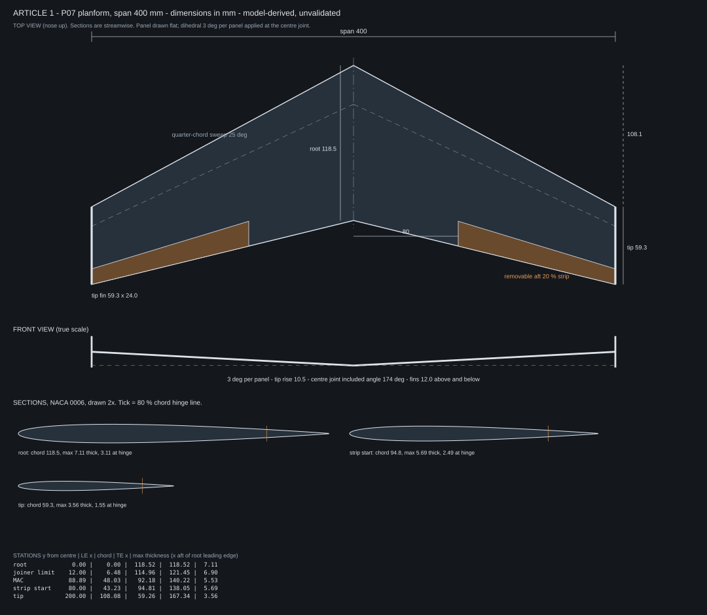
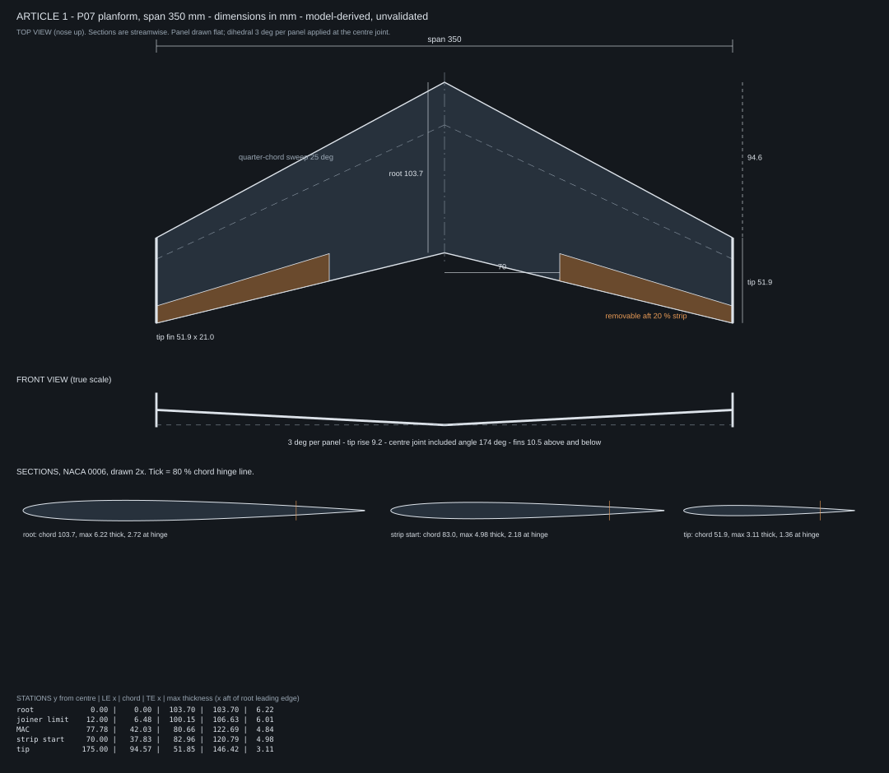

Article 1 CAD package
Geometry generated from the model's P07 planform. Model-derived and unvalidated; no mass is measured. Only the 400 mm version was modelled. The 350 mm version is the same shape scaled down.
Which files to use
Printed airfoil wing (NACA 0006)
wing_panel_right.stl: one solid wing panel, flat, ready to drop into a slicer for a weight estimate (400 mm, 350 mm). Mirror it for the left panel. Its trailing edge is thickened to 0.4 mm. It has no strip split, joiner or fins.section_root_xyz.txt,section_strip_xyz.txt,section_tip_xyz.txt: closed section curves already placed in 3D, in millimetres. Columns are x (aft), y (out along the span), z (up).sections.dxf: the same three sections as flat 2D outlines, if your CAD prefers DXF.naca0006_unit.dat: the section at chord 1, for any airfoil plug-in.stations.csv: every position and thickness as numbers.
Flat sheet wing
planform.dxf: one wing panel with the hinge lines on separate layers. Use it directly for a laser cutter, or as a sketch to extrude to the sheet thickness.small_parts.dxf: tip fins, tail, alternate tail, spare centre fin.- For knife cutting, the paper templates are in the Article 1 drawings (400 mm only).
DXF files carry no units: choose millimetres on import.
Building the printed wing in CAD
- Import the root and tip section curves. They are already in position, 200 mm apart (175 mm for the small version), with the tip shifted aft for the sweep.
- Loft from root to tip. The wing is straight-tapered, so a plain two-section loft is exact. The strip-start section is only a check and a place to split.
- Thicken the trailing edge to what your printer can make, about 0.4 mm. The true section ends at 0.15 mm or less.
- Split off the removable strip: everything aft of the 80% chord line, from the strip-start station to the tip. Hinge positions are in
stations.csv. - Make the lip strips by rotating a copy of that strip upward about the hinge line: 10 degrees for the large lip. The small lip is the aft 15% rotated 8 degrees, so it needs its own split at 85%.
- Mirror for the other panel. Then tilt each panel up 3 degrees about its root chord line; the two panels meet at 174 degrees.
- Add the tip fins as flat plates centred on the wing at each tip, and design the centre piece to suit your sheet or printed root.
The sections are streamwise: they lie parallel to the flight direction, not square to the swept leading edge. That matches the model.
400 mm

350 mm

What scaling down costs
| Span | Root / tip chord | Airfoil thickness, root / tip | Strip thickness at hinge, tip | One panel fits in | Weight at 8 N/m² | Reynolds number at 8 N/m², mean chord / tip |
|---|---|---|---|---|---|---|
| 400 mm | 118.5 / 59.3 | 7.1 / 3.6 mm | 1.6 mm | 200 × 167 mm | 29.0 g | 40,500 / 26,100 |
| 350 mm | 103.7 / 51.9 | 6.2 / 3.1 mm | 1.4 mm | 175 × 146 mm | 22.2 g | 35,500 / 22,800 |
| 300 mm | 88.9 / 44.4 | 5.3 / 2.7 mm | 1.2 mm | 150 × 126 mm | 16.3 g | 30,400 / 19,600 |
The model found the lip loses most of its effect below a Reynolds number of about 30,000. At 400 mm the outer wing is already under that line; at 350 mm more of it is, and at 300 mm almost all of it. Smaller also means every tolerance in millimetres gets tighter and the printed tip gets thinner. Full table: scale_table.csv.